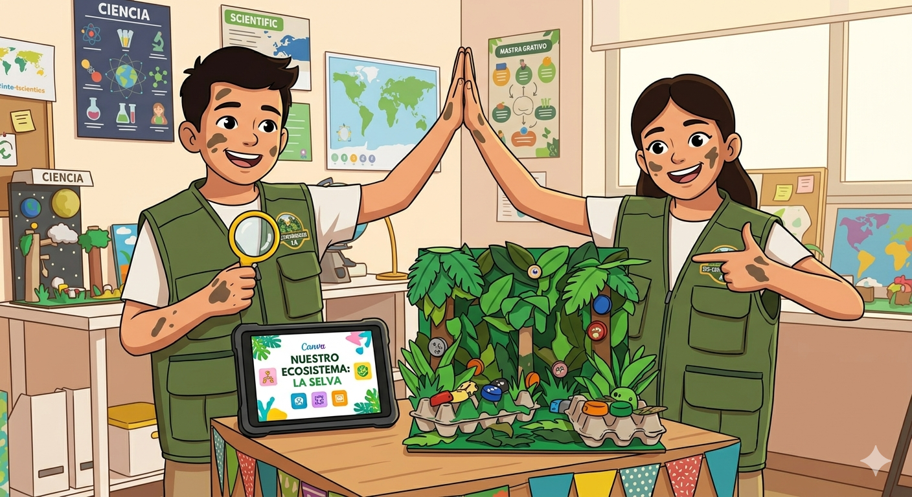

¿Cuál es vuestro Reto?
Vuestra gran misión consiste en recrear y explicar el equilibrio de un ecosistema en peligro. Pero no lo haremos de cualquier forma. Vuestro reto final tiene dos partes inseparables que os permitirán demostrar todo lo que habéis aprendido.
Misión A: Construimos el ecosistema (La maqueta física)
Vais a construir un modelo tridimensional (una maqueta) de un ecosistema específico (un bosque frondoso, un arrecife de coral, una selva tropical o un desierto árido).
¿Qué debe tener obligatoriamente vuestra maqueta?
1. El Medio Físico (Elementos Abióticos): Debéis representar el relieve, el tipo de suelo (arena, tierra, roca), y el medio (agua, aire). Aseguraos de que se entienda el clima que hay.
2. Los Seres Vivos (Elementos Bióticos): Incluid una variedad de animales (fauna) y plantas (flora) que vivan realmente en ese ecosistema. ¡No pongáis un pingüino en un desierto!
3. Realismo en 3D: ¡Tiene que tener volumen! No vale con pegar dibujos planos.
🌿 Super-Consejo Eco-Explorador: Para ser verdaderos defensores del planeta, el 90% de vuestra maqueta debe estar hecha con materiales reciclados. Usad cajas de cartón, botellas de plástico, tapones, hueveras, lanas, palitos, piedras secas, plastilina casera... ¡Creatividad al poder!
Misión B: Diseñamos la Guía Interactiva (La Presentación en Canva)
La maqueta por sí sola no habla. Necesitamos que expliquéis cómo funciona. Para ello, diseñaréis una presentación interactiva en Canva que se convertirá en vuestra guía de exposición oral.
¿Qué debe incluir vuestra presentación en Canva?
1.Título Potente y Equipo: El nombre de vuestro ecosistema y de los miembros del equipo.
2. Identificación de Elementos: Una página donde mostréis fotos de vuestra maqueta y señaléis claramente los elementos bióticos (seres vivos) y abióticos (el medio físico).
3. El Gran Secreto: La Interdependencia: Esta es la parte más importante. Debéis explicar y mostrar con imágenes o flechas una Cadena Alimentaria (quién se come a quién) y explicar qué pasaría si un elemento desaparece (por ejemplo: "¿Qué pasa si se secan todas las plantas?").
4. Mensaje de Conservación: Una reflexión final sobre por qué es importante proteger vuestro ecosistema y qué acciones concretas podemos hacer para salvarlo del futuro.
🏆 El Día de la Exposición Oral
Al final de las 4 semanas, cada equipo presentará su maqueta en clase y utilizará su presentación interactiva en Canva como apoyo para contarnos todos los secretos de su ecosistema.
¡Mucha suerte, Eco-Exploradores del Futuro!
